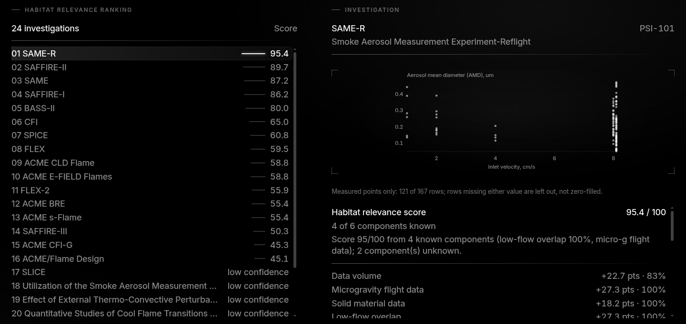
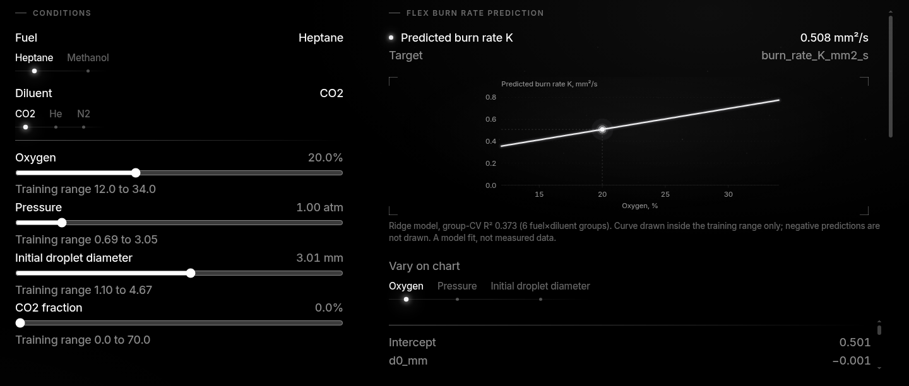
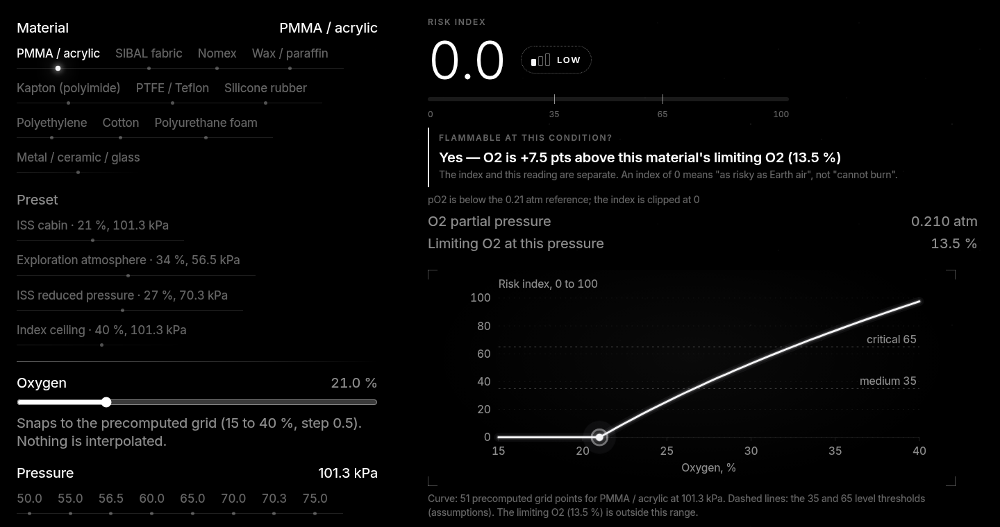
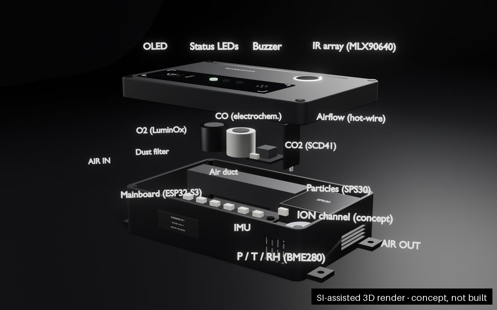

— NASA Space Apps Challenge 2026
An SI-powered dashboard that ranks, predicts and explains 24 microgravity combustion investigations from NASA’s PSI database, for fire safety in Moon and Mars habitats.
Team
Prometheus 6
Members
Halil İbrahim Kutmur · Samet Ozan Topcu · Ahmet Taha Çelik · Ömer Görgöz · Taha Yusuf Erten · Abdullah Erten
Challenge
Flame in Freefall: SI-Powered Fire Safety Insights from Microgravity Combustion Data
— The challenge
Without buoyancy, flames become spheres and behave unlike anything on Earth. NASA flew 24 combustion investigations; their data are spread across many files, formats and units.
Which experiments matter for my habitat?
Explore ranks all 24 investigations by overlap with habitat oxygen, pressure and airflow.
How fast does it burn, and how risky is this material?
Scenario predicts FLEX droplet burn rate and scores 11 cabin materials on a risk index.
What should next-generation fire-safety equipment do?
Equipment gives four data-backed design rules, a grounded Q&A assistant and the FlameSense concept.
Flame in Freefall · Prometheus 6
2 / 7
— 01 · Explore
01 SAME-R
95.4
02 SAFFIRE-II
89.7
03 SAME
87.2
The score is the overlap with habitat conditions: O₂ 17–35 %, 56–101 kPa, airflow up to 20 cm/s.
Weights: O₂ 25 · pressure 20 · low flow 15 · flight data 15 · data volume 15 · solid fuel 10. Unknown parts are left out, never set to 0.

Pick a row to see its test conditions, a chart of measured data and why it scored what it did.
Flame in Freefall · Prometheus 6
3 / 7
— 02 · Scenario

Burn-rate what-if. Set fuel, diluent, O₂, pressure and droplet size; a Ridge model trained on FLEX data predicts burn rate K at once. Tested across fuel × diluent groups: R² 0.37, n = 258.

Material risk index. 11 materials on a relative 0–100 scale, six parts each tagged data, literature or assumption with its DOI, plus a separate “Flammable here?” check.
Flame in Freefall · Prometheus 6
4 / 7
— 03 · Equipment insights
2.13
d² slope of FLEX droplets that burn out (n = 27)
Plan droplet burn time for burn-out and extinction separately.
PSI-69 · FLEX
DOI 10.60555/mbq8-0451
59 %
hot ignition at ~21 % O₂: 20 of 34 ACME tests
Cabin air does not prevent ignition: control ignition sources.
PSI-159 · ACME CFI-G
DOI 10.60555/cyt1-kh64
0.49
heater temperature vs smoke particle size, material fixed (pooled: −0.27)
Smoke detection models must know the material.
PSI-101 · SAME-R
DOI 10.60555/2np7-jv14
−0.80
ΔCO₂ / ΔO₂ in BASS-II PMMA burns (n = 66; theory −0.83)
O₂ and CO₂ sensors can cross-check each other.
PSI-25 · BASS-II
DOI 10.60555/4qc4-de67
Ask the data. A chat button opens a grounded assistant: an LLM answers only from these cards, the ranking and the risk data, and falls back to the cards when it is offline.
Flame in Freefall · Prometheus 6
5 / 7
— 04 · FlameSense concept

O₂ + CO₂ sensors
Cross-check each other (BASS-II ratio)
Particle sensor
Material-aware smoke model (SAME-R)
Thermal IR array
Sees a hot spot before smoke appears
Airflow sensor
Flow changes low-gravity flame spread
ESP32-S3 + display
Planned: live material risk index
Concept only: 140 × 90 × 45 mm, no device was built.
Flame in Freefall · Prometheus 6
6 / 7
— Prometheus 6
Now every habitat team can see which experiments to trust, what to test and what to build. Questions are welcome.
Built with
Python · pandas · scikit-learn · DuckDB · vanilla JavaScript · Blender
SI use
SI tools helped write code, docs and Blender scripts; an LLM answers in-app questions. SI images carry a watermark.
github.com/sametozantopcu/flame-freefall-iss
7 / 7
← → to move · F for full screen